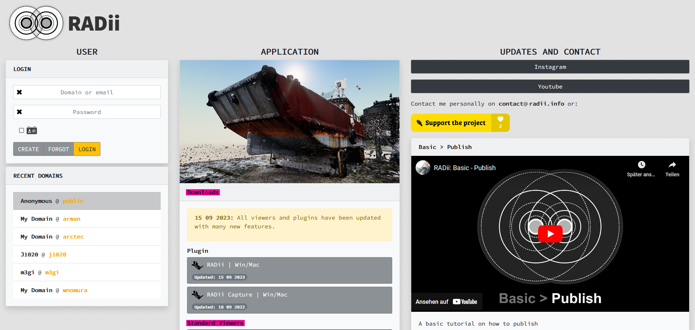

Setup¶
Viewer PC/Mac¶
To explore models in Radii you need a viewer, this is a programm that enables you to join a server (we call them channels) and download the models. Viewers are available for a number of different operating systems such as Windows/Mac, IPhone/Android and Occulus. The viewers are generally the same but have some differences, usually due to computing power.
Download the latest Radii Viewer from https://radii.info/
- Register in the user panel and confirm your email
it is not neccecary to set a domain name
Install the file
Start RADii Viewer
Congratulations you have installed Radii. On how to use Radii consult the Quick Guide and the Viewer documentation
Grashopper Plugin¶
The plugin enables you to publish (send) 3D modells and other geometry. Publishing works simillar to a Radio station, geometry can be reiceived by others as long as they are connected to the same channel as the sender.
Download the lastest Radii Plugin from https://radii.info/
- If you did not already: Register in the user panel and confirm your email
it is not neccecary to set a domain name
Unpack the .Zip file and drop the Radii.gha file it into the Rhino Grashopper window
Check if the install was succesfull, it should be visible in one your tabs as shown below.
Congratulations you have installed Grashopper Radii. On how to publish consult the Quick Guide and the Radii Grashopper documentation
Occulus¶
To be added